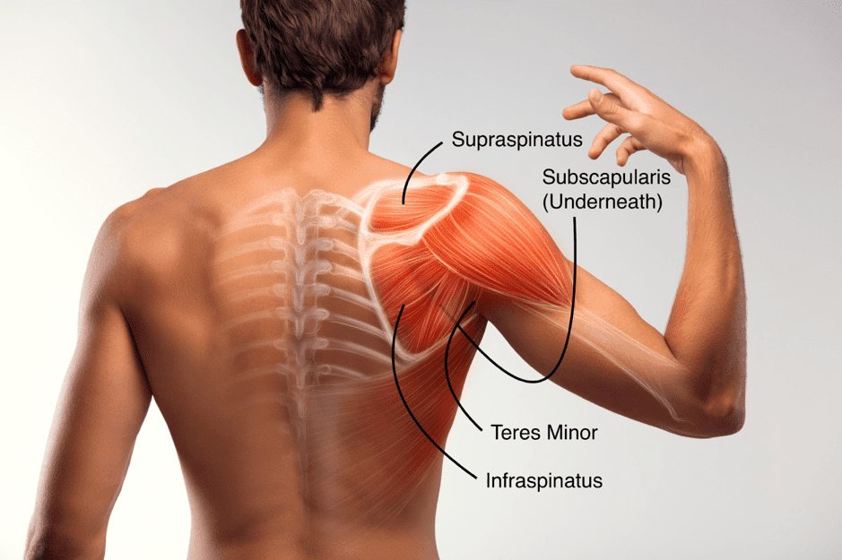

Experiencing shoulder discomfort is, regrettably, a widespread issue in Brisbane, affecting numerous individuals who often feel resigned to their persistent pain. One primary culprit behind this discomfort is rotator cuff issues, a common concern for many locals. However, embracing an effective shoulder rehab in Brisbane, particularly for rotator cuff injuries, could significantly alter this narrative.
Understanding the Rotator Cuff:
The rotator cuff refers to an ensemble of muscles and tendons tasked with securing the humerus head within the shoulder socket. It's a crucial component for shoulder stability, but when damaged, it results in symptoms like pain, joint instability, audible clicking, and even muscle wastage.
Traditional remedies often restrict certain arm movements and advocate physical therapy for restoring shoulder stability, diminishing pain, and regaining function. However, when conventional strategies, like physical therapy, don't furnish relief, individuals turn to steroid injections or various surgeries.
In our Brisbane shoulder rehab guide, we dissect rotator cuff physical therapy and propose a more holistic approach to shoulder health.

The Genesis of Rotator Cuff Pain:
Rotator cuff injuries typically stem from repetitive overhead activities that strain the tendons. However, factors like age-induced degeneration, improper posture, suboptimal shoulder mechanics, muscular imbalances, and genetic factors also play significant roles.
Physical therapy, particularly in Brisbane, targets these issues by strengthening specific muscles. Yet, it often overlooks critical injury contributors like poor posture, shoulder mechanics, and muscle imbalances, which are instrumental in a comprehensive shoulder rehab approach.
Rethinking Rotator Cuff Health:
The notion that rotator cuff injuries result solely from "overuse" is simplistic. Numerous individuals in Brisbane and beyond heavily rely on their shoulders without issues, likely due to more mechanically sound usage. Understanding the shoulder's ideal mechanical use, offering both strength and relief, is crucial.
Evolution provides insights into shoulder functionality, indicating primary roles in activities like running and throwing. These insights challenge traditional rehab views and highlight the need for a holistic approach, especially in cases of rotator cuff rehab in Brisbane.
Typical Rotator Cuff Physical Therapy:
Standard physical therapy for the rotator cuff, often lasting 4-6 weeks, recommends lifelong exercises for sustained shoulder health. These exercises include pendulums, loaded rotations, shoulder retractions, and rows. While beneficial, they lack a crucial element: integration.

Integrating the shoulder into the gait cycle
The Pitfall of Traditional Exercises:
Conventional exercises miss the shoulder's integrated functionality with the body. For example, a misaligned ribcage due to incorrect abdominal muscle training could be the underlying cause of shoulder pain. The body's interconnected nature means effective shoulder rehab cannot occur in isolation.
This revelation compels us to examine shoulder training within the context of its evolutionary adaptations. The shoulder wasn't developed in isolation but adapted for integrative activities like running and throwing. Therefore, effective rotator cuff rehab, especially in Brisbane, should reflect these integrative functions.
Here is a review from one of our clients who experienced chronic rotator cuff issues:
“I have been working with Max at Functional Patterns Brisbane twice a week for approx 6 month. Before Functional patterns I had back and shoulder pain and would regularly see chiropractors to help manage the pain. In my time training with Max I haven’t been back to the Chiropractor once. Max is exceptionally patient, great at explaining the benefits of each movement and how with these actions am undoing years of substandard movements.”
— Emma, Verified Google Review
Analysis Of Your Shoulder:
True recovery often requires a deeper understanding of our body's mechanics, which is where our specialised gait analysis comes into play. For residents searching for 'shoulder rehab Brisbane' or 'rotator cuff Brisbane', our advanced gait analysis service offers an invaluable resource.
The Shortcomings of Current Shoulder Analysis Techniques
In the realm of physiotherapy and sports medicine, traditional shoulder analysis methods have been the go-to solution for diagnosing and treating shoulder impairments. However, these conventional techniques often fall short as they fail to consider the shoulder's holistic role in full-body movement, particularly its interaction with the gait cycle and thoracic mobility.
1. Over-Simplified Analysis:
Traditional shoulder evaluations typically focus on the affected area, examining factors like range of motion, strength, and pain levels. While these isolated tests can identify surface-level issues, they miss the intricate nuances of how shoulder function is intertwined with systemic body mechanics, especially the gait cycle. Without understanding this relationship, treatment can often be myopic and less effective.
2. Neglecting the Gait-Shoulder Connection:
The gait cycle reflects our body's natural movement pattern and biomechanical rhythm. Current shoulder assessments often overlook how abnormalities in our gait can directly impact shoulder stability and health. For instance, an irregular gait might cause compensatory body movements, leading to undue stress on the shoulder, exacerbating pain, and discomfort in individuals with rotator cuff issues.
3. Ignoring Thoracic Influence:
The thoracic spine's mobility is crucial for proper shoulder function. Many assessment techniques ignore the influence of thoracic extension and rotation on shoulder issues. Restricted thoracic mobility can place additional pressure on the shoulder, limiting its function and potentially leading to further injuries. A comprehensive analysis should consider thoracic mobility to fully understand the shoulder's capacity and constraints.
4. Lack of Holistic Approach:
Conventional methods often fail to see the body as an interconnected system, preferring to treat the shoulder as a standalone unit. This approach disregards the potential root causes of shoulder pain, originating from imbalances elsewhere in the body. By not addressing these foundational issues, practitioners may only offer temporary relief rather than a long-term resolution.
5. Inadequate Long-Term Relief and Recurrence Prevention:
By focusing on symptomatic treatment, traditional shoulder analysis doesn't always prevent recurrence. Patients might experience temporary relief, only for their symptoms to return, sometimes more severely. This cycle continues because the underlying systemic issues, often related to gait or thoracic mobility, remain unaddressed.
What is Gait Analysis?
Gait analysis is a method used to assess the way you walk or run to highlight any abnormalities in your body mechanics, often invisible to the naked eye. These subtle imbalances throughout your body can contribute to repetitive stress and injuries, such as rotator cuff issues.
Benefits of Our Gait Analysis in Shoulder Rehab:
Holistic Assessment: By evaluating your entire body movement, we identify pressure points or weaknesses that may contribute to shoulder strain, providing a comprehensive approach to treatment.
Personalised Treatment Plans: Post-analysis, we craft bespoke rehab strategies that address specific imbalances, offering a more targeted and efficient recovery pathway, reducing the likelihood of future injuries.
Preventative Care: Beyond rehab, our gait analysis in Brisbane serves as a preventative measure. By correcting gait and posture discrepancies, we enhance overall body function, helping you avoid further shoulder discomfort and other related injuries.
Performance Enhancement: For athletes or individuals keen on physical fitness, gait analysis not only aids in injury recovery but also optimises performance. By understanding your body's unique mechanics, you can leverage your strengths, improve weaknesses, and reach new heights in your physical achievements.
Education and Empowerment: We believe in empowering our clients with information. Understanding your gait and its impact on your shoulder health puts you in control, helping you make informed decisions about your physical well-being.

Embracing a New Phase in Shoulder Recovery:
For those grappling with rotator cuff issues in Brisbane, integrating gait analysis into your recovery process marks a revolutionary step. It shifts the focus from treating symptoms to understanding and addressing the root cause. This comprehensive approach not only ensures a more effective recovery but also fortifies your body against future injuries, providing a sustainable, long-term solution.
Join countless others who have benefited from our advanced gait analysis system. Contact us to schedule an appointment, and take the first step towards holistic well-being and optimal shoulder health in Brisbane.